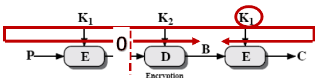
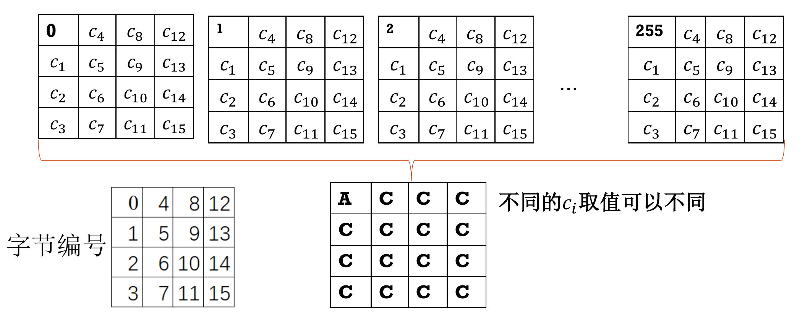
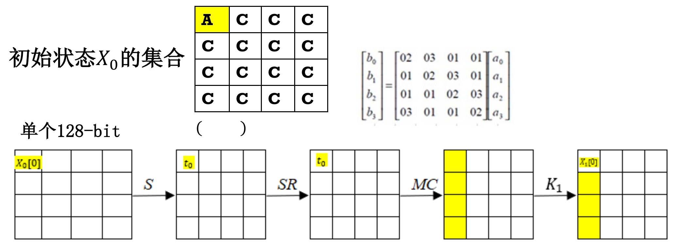
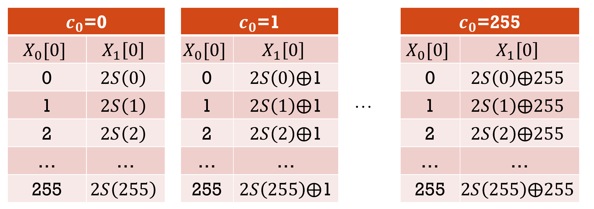
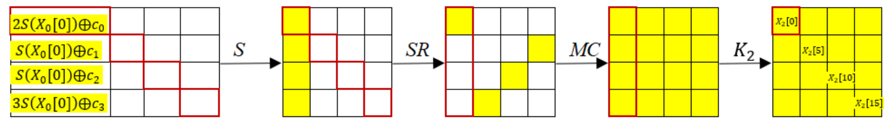
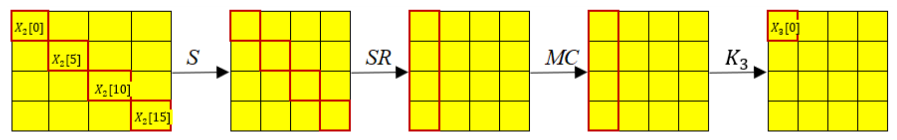
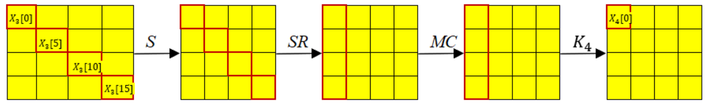
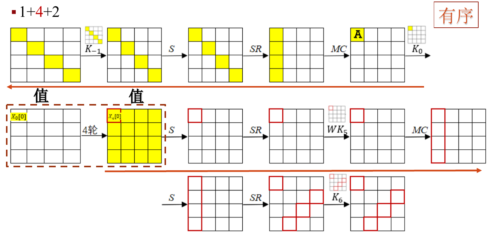
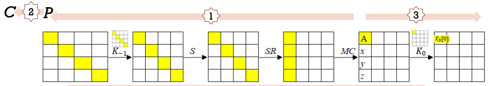
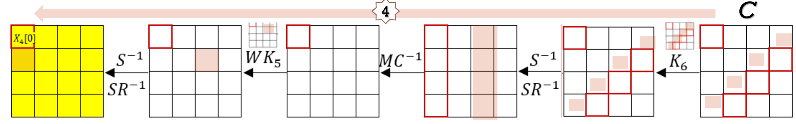

中间相遇攻击¶
来源：
密码分析学 / notes/06-中间相遇/中间相遇攻击.md
中间相遇攻击（Meet-in-the-Middle，MITM）的核心是把计算切成两边：从明文向前算，从密文向后算，让两边在中间状态或其性质上相遇。正确密钥必须满足相遇条件；不满足的候选密钥可以排除。
攻击能否省时间，关键在于两边所需的密钥能否分开猜测，以及中间条件能排除多少错误候选。它用存储空间换取计算时间；匹配出的候选再用其他明密文对验证。
相遇函数是什么¶
相遇函数是用来检查：从明文向前算出的一份中间信息，与从密文向后算出的另一份中间信息，是否满足密码结构所要求的关系。课件用
表示这种检验。
这里 \(\operatorname{info}(x)\) 是猜测相关密钥、从明文向前计算得到的信息；\(\operatorname{info}(y)\) 是猜测相关密钥、从密文向后计算得到的信息

双重 DES 的值相遇： 对已知明密文 \((P,C)\)，设 \(x=E_{K_1}(P)\)、\(y=D_{K_2}(C)\)。 正确密钥必然使 \(x=y\)，因此可以定义 \(G(x,y)=x\oplus y\)，以 \(G(x,y)=0\) 为匹配条件。 这里也可以直接把 \(x=y\) 写作相遇条件。
集合映射相遇： 在约简轮 AES 的例子中，可以把一组输入到输出的对应关系作为相遇信息。检验时判断构造出的映射是否属于中间几轮可能产生的映射集合，而不是只比较一个中间值；详见本页的“集合映射相遇”一节。
相遇条件用于初筛：不匹配的候选删除，匹配的候选进入复筛。
双重 DES：中间状态值相遇¶
双重加密使用两个独立的 56 位密钥：

上图来自第 6 章课件第 7 页。原笔记中的示意图：

K1,K2独立的情况下 已知一对 \((P,C)\) 时，攻击者：
- 穷举 \(K_1\)，计算 \(X=E_{K_1}(P)\)，将 \((X,K_1)\) 存表，按 \(X\) 索引。相同 \(X\) 对应的所有密钥都要保留。
- 穷举 \(K_2\)，计算 \(D_{K_2}(C)\) 并查表；每次相等都得到一个候选密钥对。
- 用另一对不同明密文验证候选；若还有多个候选，继续验证。
为什么第一次相遇仍有很多候选？密钥对约 \(2^{112}\) 个； 在理想化随机模型中，错误密钥对在一个 64 位中间值上匹配的概率约为 \(2^{-64}\)。因此错误候选期望数约为
第二对明密文进一步过滤后，错误候选期望数约为 \(2^{48}2^{-64}=2^{-16}\)；正确密钥仍会通过。因此约两对明密文就能把错误候选压到很低的数量。
- 数据：约两对已知明密文。
- 时间：首次枚举需要 \(2^{56}\) 次 DES 加密和 \(2^{56}\) 次 DES 解密，合计 \(2^{57}\) 次单 DES 运算；复筛约需 \(2\cdot2^{48}\) 次单 DES 运算。另有约 \(2^{56}\) 次表项插入、\(2^{56}\) 次查表，以及处理匹配项的开销。若使用理想散列表、每次插入和查表的期望开销为 \(O(1)\)，这些表操作总数也是 \(O(2^{56})\)，不改变总时间的指数级量级。只统计 DES 调用时，主项是 \(2^{57}\) 次单 DES 运算，约相当于 \(2^{56}\) 次双重 DES 运算。
- 存储：约 \(2^{56}\) 条表项。仅计算 64 位中间值约为 \(2^{62}\) bit；实际还要存储对应密钥及索引。
[!question] 查表时间为什么没有单独加进 \(2^{57}\)？ \(2^{57}\) 是单 DES 运算次数，这里的 \(2^{56}\) 次查表如果用哈希表实现的话，它与 \(2^{56}\) 次加密、解密属于相同指数级，通常合并进 \(O(2^{56})\) 的总量级，
虽然双重 DES 的密钥对有 112 位，攻击的主要计算量只有约 \(2^{57}\) 次单 DES 运算，代价是巨大的存储。以上结果采用独立密钥和随机匹配近似。
一般的值相遇与部分匹配¶
将算法分为 \(C=E_1(E_0(P))\)。
把猜测的密钥位划分为：向前专用 \(K_f\)、向后专用 \(K_b\)、两边共同使用 \(K_j\)；三组按其不同密钥位计数。对每个 \(K_j\)，分别枚举 \(K_f\) 和 \(K_b\)，计算并匹配中间值
两边密钥不独立时怎样理解这三个部分？¶
如果正向和反向计算用到的密钥有共同部分，就不能把两边的完整密钥各自当作独立的自由变量任意组合。\(K_j\) 就是这种共同部分；先固定它，再分别猜两侧各自专用的 \(K_f\)、\(K_b\)。
例如，假设两侧用到的密钥分别为 \(K_1=(u,v)\)、\(K_2=(u,w)\)，且 \(u,v,w\) 是可独立枚举的密钥位，则
对每个固定的 \(u\)，枚举所有 \(v\) 计算正向结果并建表，再枚举所有 \(w\) 计算反向结果并匹配；然后换一个 \(u\) 重复。这样两侧始终使用同一个 \(u\)。
独立密钥的双重 DES 是特殊情况：\(K_j\) 为空，\(K_f=K_1\)，\(K_b=K_2\)
复杂密钥编排可能带来额外约束，划分时要按实际密钥关系计数和枚举。
若中间状态为 \(n\) 位，匹配全部 \(n\) 位时，错误候选数近似为 \(2^{k-n}\)，其中 \(k=|K_f|+|K_b|+|K_j|\)。如果只能比较其中 \(\ell<n\) 位，首次错误候选数近似为 \(2^{k-\ell}\)。部分匹配降低了两边计算相遇信息的要求，但过滤能力也下降；后续明密文对需要能独立提供新的有效约束。
初筛复杂度中的 \(r_f/r\) 是什么？¶
这里把一次完整算法的加密作为时间单位。设完整算法有 \(r\) 轮，向前计算需要 \(r_f\) 轮，向后计算需要 \(r_b\) 轮。按每轮计算成本相近来估算：
- 一次完整加密：\(r\) 轮，记作 1 次完整加密。
- 一次向前计算：\(r_f\) 轮，折算为 \(r_f/r\) 次完整加密。
- 一次向后计算：\(r_b\) 轮，折算为 \(r_b/r\) 次完整加密。
例如完整算法有 10 轮，正向算 3 轮的成本就记为 \(3/10\) 次完整加密；反向算 7 轮的成本记为 \(7/10\) 次完整加密。这个比例是一次局部计算的成本，不是概率，也不是密钥数量。
固定一个 \(K_j\) 后，向前需要枚举 \(2^{|K_f|}\) 个密钥，每次算 \(r_f\) 轮；向后需要枚举 \(2^{|K_b|}\) 个密钥，每次算 \(r_b\) 轮。因此固定一个 \(K_j\) 的计算量为
共同部分 \(K_j\) 一共有 \(2^{|K_j|}\) 种取值，每一种都要做一遍上面的计算，所以初筛的部分加解密量为
双重 DES 例子： 两次 DES 合起来是 32 轮，记作一次完整双重 DES 加密；向前加密一次 DES 是 16 轮，向后解密一次 DES 也是 16 轮。所以 \(r=32\)、\(r_f=r_b=16\)，两侧每次局部计算都相当于 \(1/2\) 次双重 DES。又因为 \(|K_j|=0\)、\(|K_f|=|K_b|=56\)，代入可得
这与前面写的 \(2^{57}\) 次单 DES一致：一次双重 DES 包含两次单 DES，所以 \(2^{56}\) 次双重 DES 对应 \(2^{57}\) 次单 DES。只是计量单位不同。
如果直接用“单轮运算”计数，就先算 \(2^{|K_j|}(2^{|K_f|}r_f+2^{|K_b|}r_b)\)；除以 \(r\) 后，才换成上面的“完整加密次数”。
复筛和最终验证另计；

存储较小一侧的表时，表项数约为 \(\min(2^{|K_f|},2^{|K_b|})\)
密钥空间按独立密钥位计数，共同部分只计一次。
拼切技术：2K3DES¶
2K3DES 使用两个 56 位密钥，首尾两层都使用 \(K_1\)：
把两处中间状态记为 \(A,B\)，加密过程是：
1. 为什么不能像双重 DES 那样直接切？¶
例如在 \(A\) 处切开，用一组已知明密文 \((P,C)\)，从两边计算 \(A\)：
左边需要 \(K_1\)，右边也需要 \(K_1\) 和 \(K_2\)。先固定一个 \(K_1\) 时，可以计算左边，但右边仍要枚举 \(2^{56}\) 个 \(K_2\)；换一个 \(K_1\) 后，\(D_{K_1}(C)\) 也改变，右边需要重新计算。总共要处理约 \(2^{56}\times2^{56}=2^{112}\) 个密钥组合，没有取得双重 DES 那种直接分表相遇的节省。
拼切的思路是：先把内部状态 \(A\) 固定，再利用选择明文把明文端和密文端接起来，换一个地方做相遇。

2. 固定 \(A=0\)，怎样得到对应明文？¶
为了让第一层输出 \(A=0\)，需要明文满足
攻击者不知道真实的 \(K_1\)，所以对每个候选 \(\kappa_1\) 都计算一个明文：
把这个明文提交给真实的 2K3DES 加密接口，得到密文 \(C_{\kappa_1}\)。只有当 \(\kappa_1\) 恰好等于真实 \(K_1\) 时，才能确定真实加密的第一层输出就是 \(0\)。
3. 为什么可以在 \(B\) 处相遇？¶
先看猜对 \(K_1\) 的那次查询。因为 \(A=0\)，从中间层得到
另一方面，从得到的密文逆最后一层，可以算出同一个 \(B\)：
于是正确密钥满足相遇条件
等式左边需要候选 \(K_1\) 和对应查询得到的密文；右边只需要候选 \(K_2\) 和固定值 \(0\)。两边可以分别枚举，再比较结果。
4. 实际攻击步骤¶
先建表： 枚举每个候选 \(\kappa_2\)，计算 \(D_{\kappa_2}(0)\)，把 \((D_{\kappa_2}(0),\kappa_2)\) 存入表中。同一个中间值若对应多个密钥，全部保留。
再查询并查表： 对每个候选 \(\kappa_1\)：
- 计算 \(P_{\kappa_1}=D_{\kappa_1}(0)\)。
- 查询该明文的真实密文 \(C_{\kappa_1}\)。
- 计算 \(D_{\kappa_1}(C_{\kappa_1})\)，用它查预计算表。
- 每个匹配项给出一组候选 \((\kappa_1,\kappa_2)\)，再用其他明密文对验证。
表中右侧结果可以提前按 \(K_2\) 枚举；左侧则是每猜一个 \(K_1\)，先通过加密接口获得对应密文，再算出查表值。
拼切的好处： 原来反向式的 \(E_{K_2}(D_{K_1}(C))\) 同时依赖两个密钥，每换一个 \(K_1\) 就要重新枚举 \(K_2\)。拼切后，右边 \(D_{K_2}(0)\) 只依赖 \(K_2\)，可以一次性建表，供所有 \(K_1\) 猜测复用；左边 \(D_{K_1}(C)\) 则通过对应的选择明文查询得到。于是两侧各枚举约 \(2^{56}\) 次，而不需要重复处理 \(2^{112}\) 个密钥组合。代价是需要大量表项和选择明文查询。
也可以先猜一个 \(K_1\)、构造并查询明文、算出左边的值，再去猜 \(K_2\) 检查等式；预先建表只是把每次重复枚举 \(K_2\) 的工作合并成一次。
5. 复杂度怎么计算？¶
- 预计算： 枚举 \(2^{56}\) 个 \(K_2\)，做 \(2^{56}\) 次单 DES 解密，存储 \(2^{56}\) 条表项。
- 在线阶段： 枚举 \(2^{56}\) 个 \(K_1\)；每个候选做两次单 DES 解密、一次选择明文查询和一次查表。选择明文查询总数至多为 \(2^{56}\)。
- 错误候选： 在随机匹配近似下，两边各有 \(2^{56}\) 个结果，匹配的是 64 位 \(B\)，错误匹配约有 \(2^{56+56-64}=2^{48}\) 个，随后用其他明密文复筛。
因此，按常数时间查表估算，攻击者的计算和存储都是 \(O(2^{56})\) 量级，并需要 \(O(2^{56})\) 次选择明文查询。这里的“选择明文”很重要：攻击者必须能提交自己构造的 \(P_{\kappa_1}\)，而不是只拿到现成的已知明文。
6. 与双重 DES 的数据条件对比¶
- 双重 DES 的普通中间相遇： 用已知的明密文 \((P,C)\) 建表、查表，再用其他已知明密文验证候选。
- 这里的 2K3DES 拼切： 对每个 \(\kappa_1\) 构造 \(P_{\kappa_1}=D_{\kappa_1}(0)\)，必须向真实加密接口提交该明文并取得对应密文，因此是选择明文攻击。
集合映射相遇：约简轮 AES 的例子¶
这一节按课件的顺序，先推导 4 轮 AES 的集合映射区分器，再把它用于 7 轮 AES-256 的密钥恢复。这里的相遇对象是一整张有序映射表。
1. 初始集合和记号¶
取 256 个 AES 状态组成集合。第 0 字节 \(X_0[0]\) 遍历 \(0,1,\ldots,255\)，其余 15 个字节各自固定。状态字节按课件的列优先方式编号：

图源：第 6 章课件，第 17 页。
其中 \(A\) 表示该位置遍历全部 256 个字节值，\(C\) 表示该位置在这个集合中固定。课件图中初始状态的 \(c_i\) 是固定输入字节，下面各轮公式的 \(c_i\) 重新用于表示合并后的常量。用 \(X_i[j]\) 表示第 \(i\) 轮结束后编号 \(j\) 的字节；每轮依次经过 SB、SR、MC、轮密钥异或。课件的四轮区分器从这里的 \(X_0\) 开始，不另外计算初始轮密钥异或。
我们一直追踪同一个映射：
把输入按 \(0,1,\ldots,255\) 排序，记录每个输入对应的输出，就得到一张含 256 个字节的有序映射表。顺序很重要：表中的每个输出都要对应同一个输入。
下文 \(S\) 是 AES S 盒；\(2t\)、\(3t\) 等乘法是 AES 的 \(GF(2^8)\) 乘法。\(c_0,c_1,\ldots\) 表示对同一个集合固定的字节，用来合并其他固定输入和轮密钥的贡献；不同的 \(c_i\) 可以取不同的值。
2. 第一轮：1 个常数字节决定一张映射表¶

图源：第 6 章课件，第 18 页。
令活动字节输入为 \(a=X_0[0]\)，记 \(t=S(a)\)。经过第一轮后，活动字节扩散到第一列，课件将它们写成
其他位置对于该集合仍为常数。之所以是第一列：原来的活动字节在第 0 行，经 SB 后仍活动，SR 不移动第 0 行，MC 再把它扩散到这一列的四个位置。
只看第 0 个输出字节：
\(S\) 和乘以 \(2\) 都是已知运算，所以固定 \(c_0\) 后，256 个输入各自对应的输出就全确定了。\(c_0\) 有 \(2^8\) 种取值，故这类一轮映射至多 \(2^8\) 张表。例如 \(c_0=0\) 和 \(c_0=1\) 分别给出 \(a\mapsto2S(a)\) 和 \(a\mapsto2S(a)\oplus1\)。

图源：第 6 章课件，第 19 页。
决定这张映射的是 1 个常数字节 \(c_0\)；整轮中的其他常数没有进入当前观察的 \(X_1[0]\)。
3. 第二轮：观察 \(X_2[0]\)，需要 2 个常数字节¶

图源：第 6 章课件，第 20 页。
第 0 行经 SR 仍在原列；第 1、2、3 行的活动字节则分散到不同列。对 \(X_2[0]\)，其 MC 输入来自上一轮的 \(X_1[0],X_1[5],X_1[10],X_1[15]\)；其中只有 \(X_1[0]\) 随 \(a\) 变化，其余三项固定。所以
这里 \(c_4\) 把后三个常量项和 \(K_2[0]\) 合并了。因此映射 \(a\mapsto X_2[0]\) 由 \(c_0,c_4\) 两个字节决定，至多有 \(2^{16}\) 张表。
为了继续推第三轮的 \(X_3[0]\)，还需要追踪另外三个第二轮状态字节。课件给出：
这里每个 \(X_2[\cdot]\) 都随同一个 \(a\) 变化；\(c_0,\ldots,c_7\) 在整个 256 元集合里固定。
4. 第三轮：4 条输入汇合，得到 9 个字节¶

图源：第 6 章课件，第 21 页。
第三轮中，经过 SR 后，\(X_2[0],X_2[5],X_2[10],X_2[15]\) 恰好进入同一列，再由 MC 合成 \(X_3[0]\)：
把上一轮四个表达式代入，就得到 \(X_3[0]\) 关于 \(a\) 的完整表达式。四个输入合起来由 \(c_0,\ldots,c_7\) 决定，再加上末尾的 \(K_3[0]\)，所以课件用 9 个字节描述映射 \(X_0[0]\mapsto X_3[0]\)：
这些参数固定之后，依次代入 256 个 \(a\)，就能算出整张三轮映射表；因此表的数量至多为 \(2^{72}\)。
5. 第四轮：追踪四个第三轮字节，得到 25 个字节¶

图源：第 6 章课件，第 22 页。
第四轮的 \(X_4[0]\) 由第三轮的四个对角字节经过 SB、SR、MC 和密钥异或得到：
因此，不能只知道上一小节的 \(X_3[0]\)，还要同时描述 \(X_3[5],X_3[10],X_3[15]\)。课件逐项展开这四个第三轮字节后，得到如下参数计数：
| 来源 | 参数 | 字节数 |
|---|---|---|
| 第一轮第一列的固定贡献 | \(c_0,c_1,c_2,c_3\) | 4 |
| 第二轮 16 个字节各自合并出的固定贡献 | \(c_4,\ldots,c_{19}\) | 16 |
| 第三轮四个对角字节的轮密钥 | \(K_3[0],K_3[5],K_3[10],K_3[15]\) | 4 |
| 第四轮输出字节的轮密钥 | \(K_4[0]\) | 1 |
| 合计 | 25 |
其中，第三轮只观察 \(X_3[0]\) 时只需要第二轮的 \(c_4,\ldots,c_7\)；为了再算出 \(X_3[5],X_3[10],X_3[15]\)，还要补上其余的 \(c_8,\ldots,c_{19}\)。所以不是把第三轮的 9 个字节简单乘以 4：四条表达式共享 \(c_0,\ldots,c_3\)。
固定这 25 个字节后，\(a\mapsto X_4[0]\) 的 256 项就确定，因此这样的四轮映射至多有
梳理计数：观察每轮的第 0 个输出字节时，课件给出 \(1\to2\to9\to25\) 个字节。25 个参数的不同取值也可能产生同一张表，所以这是表数量的上界。
6. 用四轮映射构造区分器¶
一般从 256 个输入到 1 字节输出的有序映射，每个输出有 256 种可能，共有
而上述四轮 AES 的表至多 \(2^{200}\) 张。攻击分两步：
- 预计算： 枚举 25 个参数的所有可能，计算并保存对应的四轮映射表。
- 在线判断： 选择一个符合初始条件的 256 元明文集合，取得对应输出，按输入 \(X_0[0]\) 的顺序组成映射表 \(T\)；若 \(T\) 在预计算集合中，判断为目标四轮结构，否则判断为随机函数。
目标四轮结构产生的表一定包含在预计算集合中；若参照对象是均匀随机函数，它的表落入该集合的概率至多
为什么叫集合映射相遇？ 预计算一边列出中间四轮结构允许的映射，实际数据一边构造出观察到的映射；查表时比较的是两张完整的有序映射表，而不是比较一个 128 位中间状态。
7. 扩展到七轮 AES-256：\(1+4+2\)¶
在四轮区分器前接一轮、后接两轮：

课件第 27 页。这里四轮区分器的 \(X_0\) 和 \(X_4\) 是这四轮的入口与出口，不是整个七轮密码的明文和密文。
- 预计算映射库。 按上述 25 个参数枚举四轮映射表并保存。每张表含 \(2^8\) 个输出字节，最多 \(2^{200}\) 张，所以课件估算预计算为 \(2^{200}\cdot2^8=2^{208}\) 次目标字节计算，存储约 \(2^{208}\) 字节。
- 连接前一轮。 按课件记号，猜测首轮所需的 \(K_{-1}[0,5,10,15]\) 四个字节，构造 256 个明文。猜测正确时，附加轮的 MC 输出第一列为 \((A,x,y,z)^T\)：\(A\) 遍历 256 个值，\(x,y,z\) 固定；其余列也固定。经过相同的轮密钥异或后，进入中间四轮的状态便只有第 0 字节遍历。查询真实加密，取得密文集合。
- 确定输入顺序。 再猜入口密钥字节 \(K_0[0]\)，由 \(X_0[0]=A\oplus K_0[0]\) 算出每个明文对应的 \(X_0[0]\)，并按它排序，使输入顺序与预计算表一致。
- 连接后两轮。 猜测末两轮涉及的五个密钥字节 \(WK_5[0]\) 和 \(K_6[0,7,10,13]\)，对 256 个密文做部分解密，得到对应的 \(X_4[0]\)，构造 \(X_0[0]\mapsto X_4[0]\) 的有序表 \(T\)。其中 \(WK_5[0]\) 是课件将轮密钥异或与逆列混合交换位置后得到的等效密钥字节。
- 相遇并复筛。 \(T\) 不在预计算表中，就排除该组首尾密钥猜测；\(T\) 在表中，就保留候选，再结合其他映射、密钥关系和明密文恢复并验证剩余密钥。

图源：第 6 章课件，第 28 页。

图源：第 6 章课件，第 29 页。
课件对一个映射给出的估计是：\(2^{32}\) 个选择明文；在线约 \(2^{80}\cdot2^8=2^{88}\) 次部分解密；预计算和存储量如上。在线的 \(2^{80}\) 对应所猜的 10 个字节，\(2^8\) 对应每次构造映射所需的 256 个输入。这是课件的约简七轮 AES-256 示例，计算单位需与完整加密区分。
为什么数据量是 \(2^{32}\)，而不是每次猜测都再查询 256 个新明文？ 可以固定其余 12 个明文字节，让位置 \(0,5,10,15\) 的四个字节遍历所有组合，先取得 \(2^{32}\) 个明文及其密文。各个首轮密钥猜测所构造的 256 元集合都是这个明文池的子集，可以复用已经取得的密文。
8. 课件中的一个改进：用输出差分消去 \(K_4[0]\)¶
第四轮输出可写成 \(X_4[0]=F(a)\oplus K_4[0]\)。选输入 \(a=0\) 对应的输出为基准，对同一集合内的每个输出求异或：
两个 \(K_4[0]\) 抵消，差分映射不再依赖这个字节，描述参数从 25 个降到 24 个，预计算规模减少一个 \(2^8\) 因子。课件还讨论调整相遇位置、无序映射和利用密钥编排；相关集合性质可参照 Square 攻击。